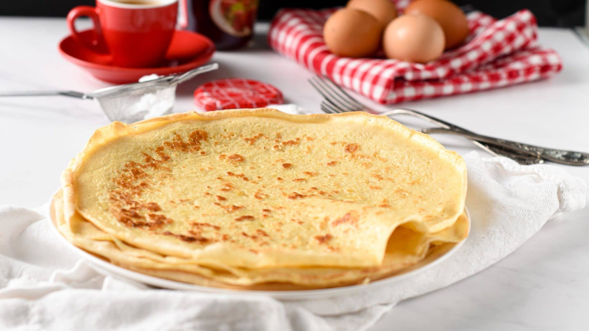

French Crepe - Gagne Family Recipe

Description
I am a French Canadian from Manitoba, and I had this recipe
inumerable amounts of times. It can either
be served simply with butter,
in a traditional style with maple syrup, or even with a minced
fruit salad on
top. Your imagination is the limit.
Ingredients
- 3 cups of flour
- 3 cups of water OR 11⁄2 cups of milk
- 3 teaspoons of baking powder
- 2 eggs
- 1⁄4 cup of sugar
- pinch of salt
- 3 teaspoons of oil
- 1 teaspoon of lemon juice
- butter for greasing pan
Steps
- Mix dry ingredients together in mixing bowl
- Gradually incorporate wet ingredients, whisking constantly until a consistent mixture is formed
- Grease pan with butter and turn burner on medium heat
- Ladle some of your crepe mix and tilt until a thin layer is formed accross the whole surface
- Cook until bubbles have started to form and the edge of the crepe can be lifted easily
- Flip once and finish cooking. Enjoy!